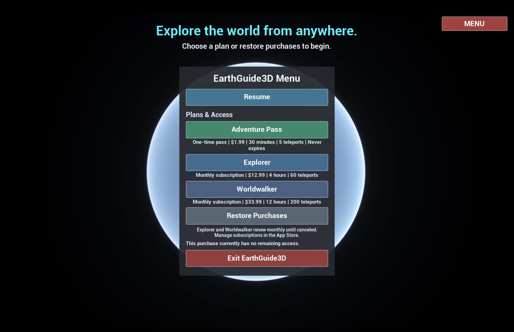
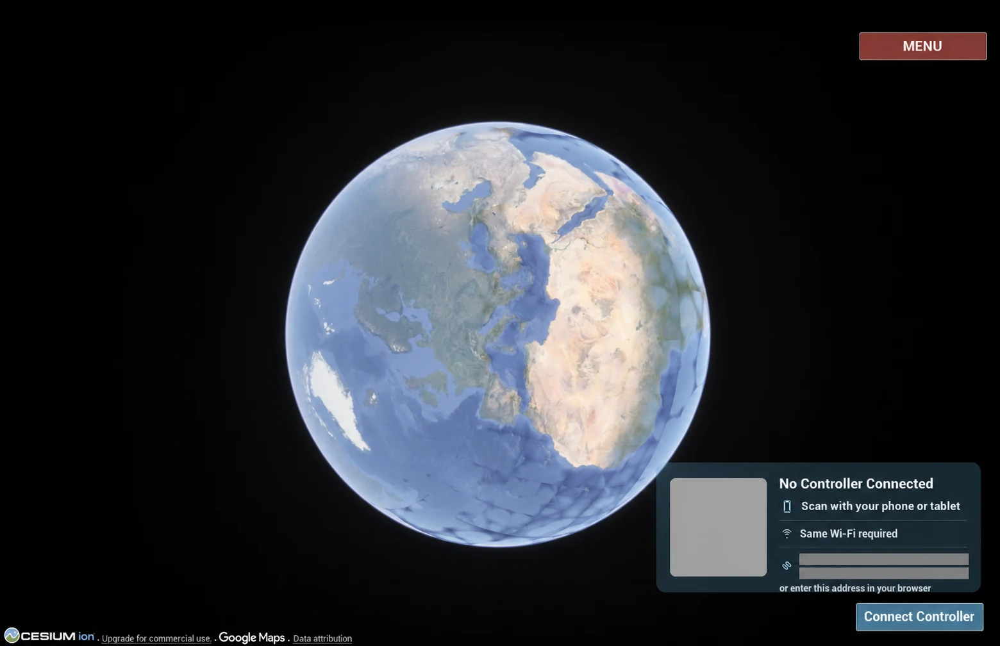
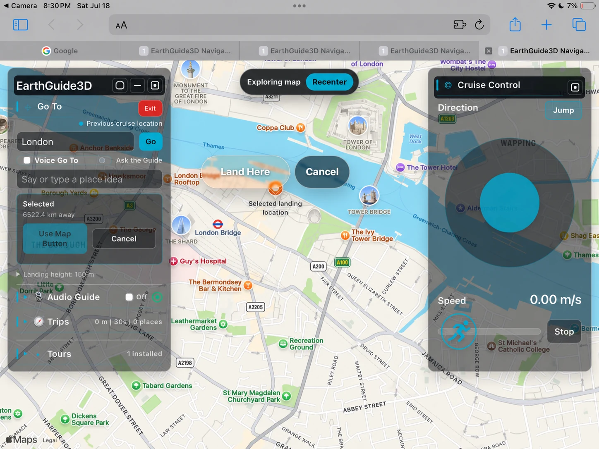
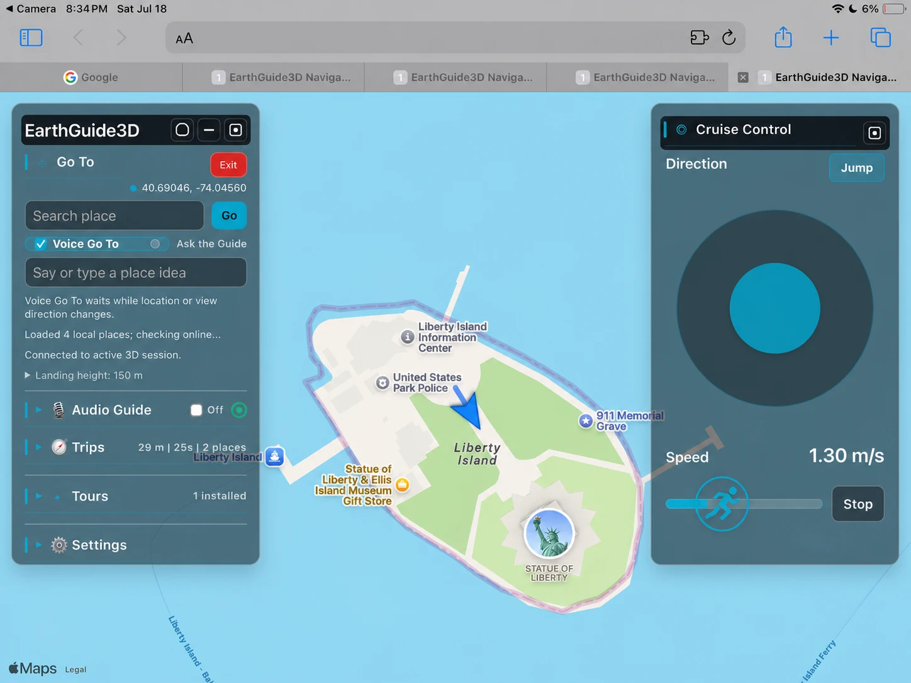
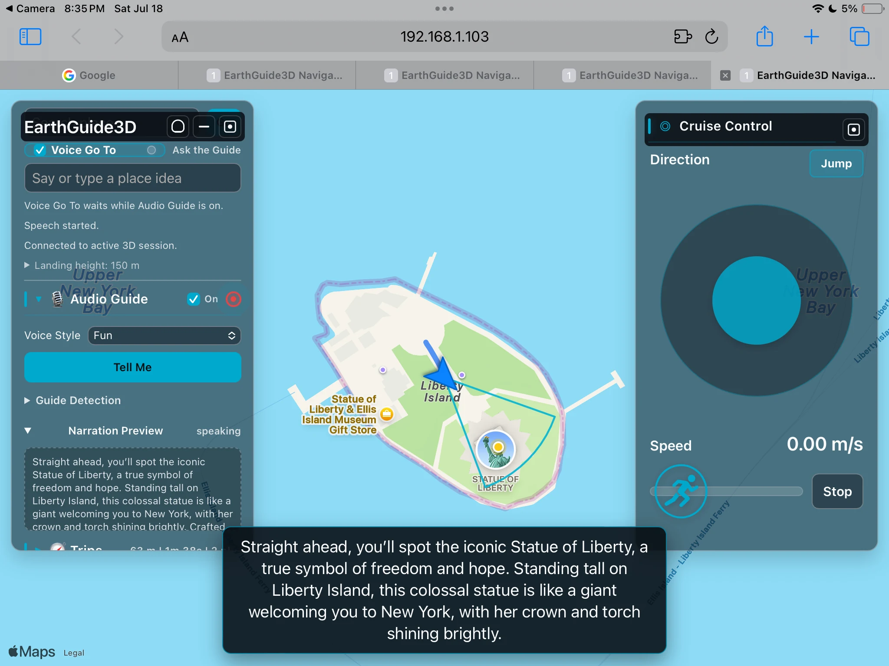
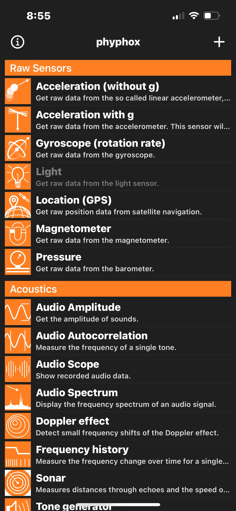
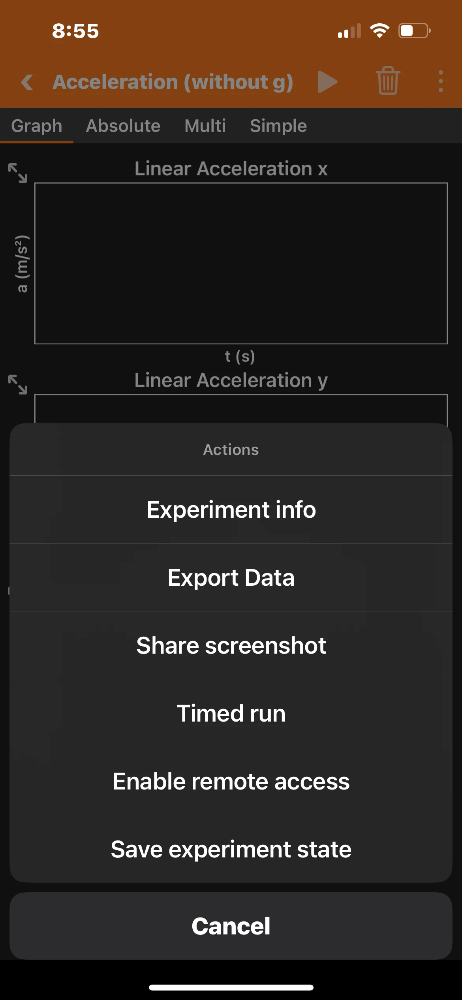
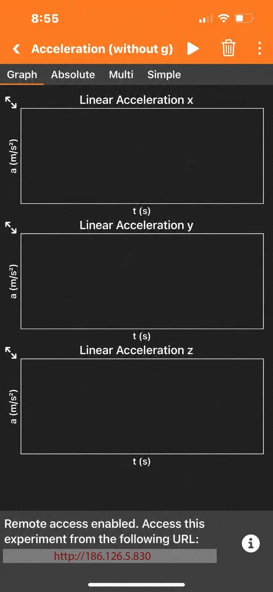
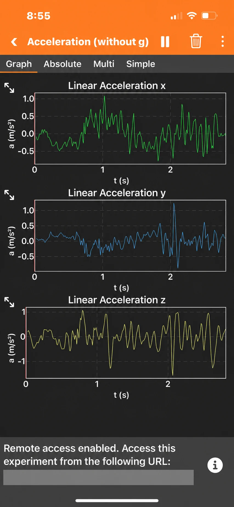
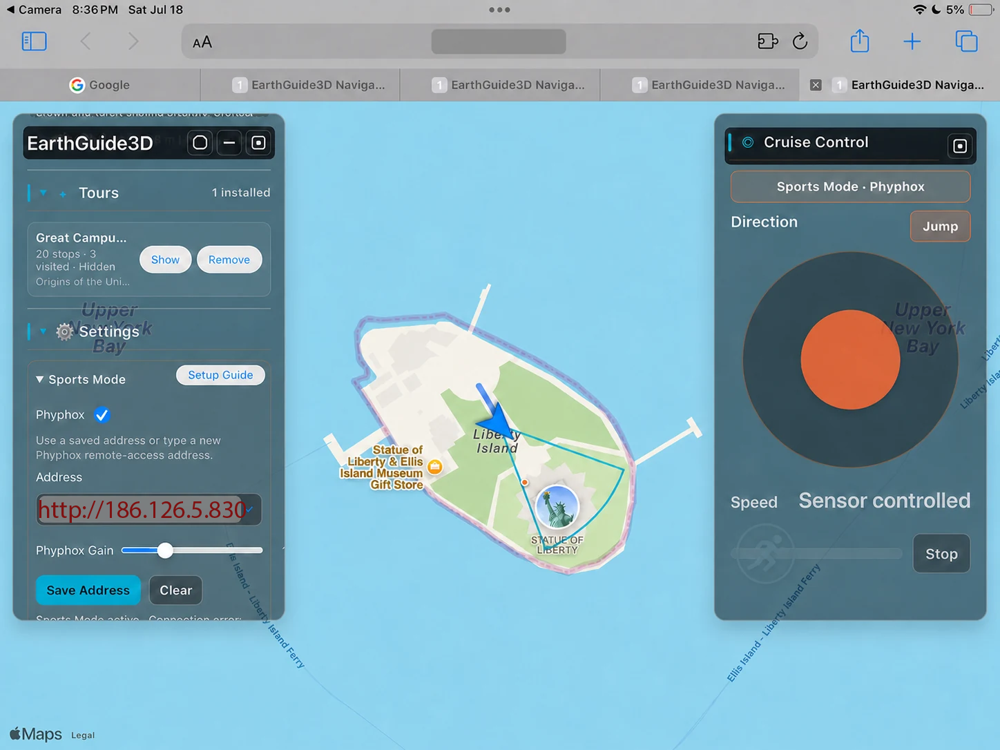

Getting Started
EarthGuide3D runs on Mac. The Mac displays the immersive 3D world while a phone or tablet can serve as the wireless controller.
- Open EarthGuide3D on your Mac and allow local-network access if macOS asks.
- Keep your Mac and controller device on the same trusted private Wi-Fi network or personal hotspot.
- Use the QR code shown in the app to open the controller in a phone or tablet browser.
- For Sports Mode, use another mobile device running the free Phyphox app as the motion sensor.
Step 1
Purchase or restore a plan
- Open EarthGuide3D on your Mac and choose Menu.
- Select the Adventure Pass, Explorer, or Worldwalker plan shown in the app.
- Complete the purchase through the Mac App Store. If you already purchased access with the same Apple Account, choose Restore Purchases.

Step 2
Scan the QR code
- Keep the Mac and controller device on the same trusted private Wi-Fi network or personal hotspot. Avoid public or guest Wi-Fi.
- Point the phone or tablet camera at the QR code shown by EarthGuide3D.
- Open the detected page in your browser. The first scan connects the controller to the active 3D session.
Treat the live QR code like a password for the current session. For security, it pairs only the first controller page that scans it. If that controller page is closed accidentally, relaunch EarthGuide3D and scan the new QR code it shows. Keep the live code out of view of other people.

Step 3
Choose a place and land
- Type a city or landmark in Go To, use Voice Go To, or tap a location on the map.
- Review the destination marker and the selected landing location.
- Tap Land Here to send the destination to EarthGuide3D.

Step 4
Set direction and cruise speed
- Use the circular direction control to choose where to move.
- Drag the speed slider to set a comfortable cruise speed.
- Tap Stop whenever you want movement to pause.

Step 5
Turn on Audio Guide
- Expand Audio Guide in the left control panel.
- Switch it on and choose a voice style.
- Explore normally. When an eligible nearby point of interest is detected, EarthGuide3D prepares and plays a short narration.
- Use Tell Me when you want a narration for the current detected place.

Step 6
Set up Sports Mode with Phyphox
Sports Mode uses motion from a second phone running the free Phyphox app. Keep the sensor phone and Mac on the same trusted private Wi-Fi network or personal hotspot.
Treadmill safety: Sports Mode’s treadmill experience is intended for adults. If a child is permitted to try it, a parent, guardian, or other responsible adult must decide that it is appropriate, remain directly present and supervising at all times, and accept responsibility for that decision and the child’s safety. Never leave a child unattended on a treadmill.
- Install and open Phyphox on the sensor phone.
- Under Raw Sensors, open Acceleration (without g).
- Open the three-dot menu and choose Enable remote access.
- Return to the EarthGuide3D controller. Open Settings, expand Sports Mode, and tick Phyphox.
- Enter the remote-access address displayed by Phyphox, then tap Save Address.
- Start the Phyphox experiment. The Cruise Control panel changes to Sports Mode · Phyphox and speed becomes sensor controlled.
The address shown in red is an example only. Enter the remote-access address displayed by your own Phyphox device.





Frequently Asked Questions
How do I search for places?
Open the wireless controller, use its search field to find a city, landmark, or other destination, then select the result to send it to EarthGuide3D. You can also choose a location directly on the map.
How do I use voice search?
Use Voice Go To in the controller and allow microphone permission when your browser asks. Speak the name of a place, then review and select the result. Voice Go To may not be available in some recent Safari versions; if so, type the destination in Search or select it on the map.
How do I use Sports Mode?
Open the free Phyphox app on a second mobile device and enable its motion-sensor experiment. Keep that device on the same local network as your Mac, then select the motion-sensor option in EarthGuide3D. The phone or tablet controller can remain available for navigation.
Why are some regions more detailed than others?
3D map detail depends on available imagery and terrain data for a given place. Major cities and well-mapped landmarks often have richer detail than remote areas.
Which devices are supported?
EarthGuide3D is designed for Mac. The wireless controller works in a modern browser on a phone, tablet, or another computer connected to the same Wi-Fi network. Sports Mode also needs a separate mobile device capable of running Phyphox.
Do I need Python or developer tools?
No. The Mac App Store app includes its Navigator helper and Python runtime, starts them automatically, and does not require Terminal, Xcode, Unreal Engine, or a separate Python installation.
How do subscriptions work?
If a version of EarthGuide3D offers subscriptions or in-app purchases, they are purchased and managed through the Mac App Store. Use the app’s purchase or restore controls, or manage subscriptions in your Apple Account settings. Availability and pricing are shown in the App Store before purchase.
How do I delete hosted service data?
Open the EarthGuide3D menu and choose Delete Service Data, then confirm. This removes detailed hosted usage events, session history, notice reads, and Journey Drop install history. It does not cancel an App Store subscription, and minimum purchase, refund, entitlement, balance, and aggregate quota records remain where needed to honor purchases and prevent duplicate grants. See the Privacy Policy for retention details.
Troubleshooting
Stuck underground, inside a building, or among trees
First, try Jump. If that does not free you, choose a nearby open location and teleport again. If you fall underground immediately after landing, increase the Landing Height before trying the landing again. Roads, plazas, and other open areas usually provide the clearest landing space.
Cannot connect the controller
Confirm EarthGuide3D is open, that both devices are on the same trusted private Wi-Fi network or personal hotspot, and that macOS has been allowed to accept local-network connections. Avoid guest networks that block communication between devices. For security, only the first controller page that scans the QR code can connect to the running app session. If the controller page was closed accidentally, scanning the code again will not reconnect it—relaunch EarthGuide3D, then scan the new QR code it displays.
Voice search is not working
Confirm your controller browser has microphone permission and that its microphone is not being used by another app. Voice Go To may not be available in some recent Safari versions even when microphone permission is enabled. If voice search does not work, type the destination in Search or tap a location directly on the map instead.
Motion sensor is not detected
Make sure Phyphox is open and actively running its sensor experiment on the separate mobile device. Check that the device is on the same network and that Sports Mode is selected in EarthGuide3D.
Map loading is slow
3D maps, place search, and online guide features need a reliable internet connection. Try another destination, wait for imagery to finish loading, or use a stronger network connection.
The AI guide is unavailable
Check your internet connection and try again. The Audio Guide can depend on an online service; if it is temporarily unavailable, you can continue exploring and try the guide later.
Contact
For help that is not covered here, email our support team with your Mac model, macOS version, and a short description of what happened.